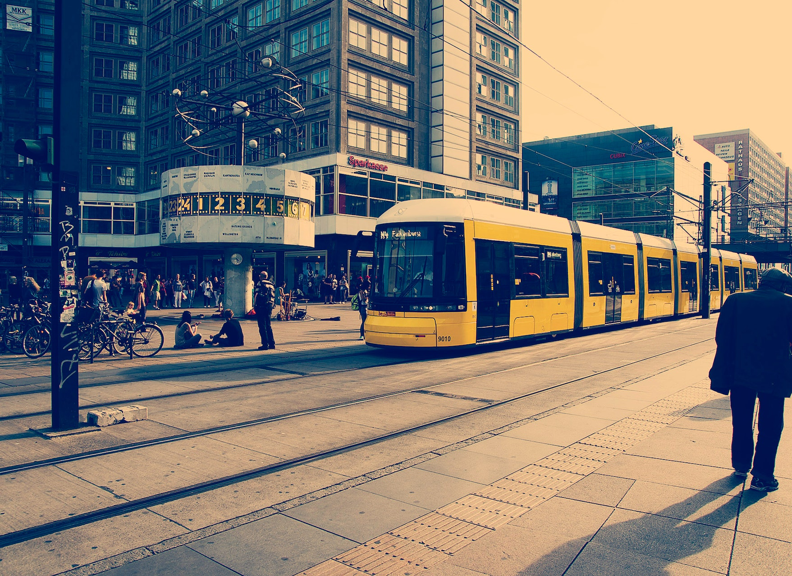

The camera certainly has a privileged relationship with us, documenting our lives accompanying us on holidays, trips, events chronicling childhood histories, are an essential piece of equipment ‘An event known through photographs certainly becomes more real than it would have been if one had never seen the photographs
Because of the camera both analog ‘chemical’ and digital, it is now feasible for us to see places, people and objects without even going to the destination of these focuses.
Photographs have consistent strength in comparison to painting and drawings; the clarity of the photographic image can be as good as retinal attributes, art can range from a photographic like detail or creative interpretations.
Would we be able to clearly be able to recall the events in our life successfully without a camera?
Photographs are ultimately is something we gain pleasure or information from, whether its admiring pictures of our loved one...
its what we use to record our lives its what we see on the cover of magazines and illustrating the news online.
its what we use to record our lives its what we see on the cover of magazines and illustrating the news online.
its what we use to record our lives its what we see on the cover of magazines and illustrating the news online.
Subscribe, and click the notification button.